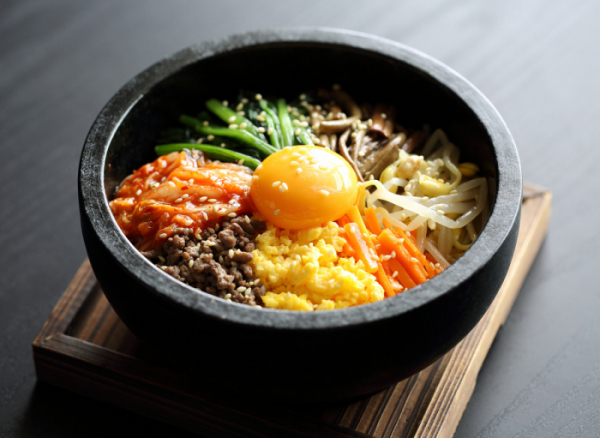

진주비빔밥

진주비빔밥은 향토음식으로서의 명성과 역사적인 의미, 그리고 시각적인 아름다움까지 갖춘 음식이다.
진주비빔밥은 그 맛과 영양성이 뛰어나 조선시대에는 궁중에서 즐겨먹는 음식 중 하나였으며,
특히 태종 때에는 한양의 정승들이 비빔밥을 먹기 위해 천리 길 진주를 자주 왔었다는 기록이 있다.
천년의 역사가 흐르는 강의 도시, 진주의 아름다운 풍경과 천년의 맛과 향기를 간직한 진주 비빔밥은 한 끼에 필요한 영양소를 골고루 섭취 할 수 있는 웰빙식이다.
진주비빔밥을 꽃밥 또는 칠보화반(七寶花盤)이라고 한 것은 황금색의 둥근 놋그릇에 여러 가지 계절 나물이 어우러져 일곱 가지 색상의 아름다운 꽃모양을 하고 있기 때문이다. 여기에 진주비빔밥은 보탕과 그 위에 붉은 엿고추장, 특히 쇠고기 우둔살을 잘게 썰어 깨소금, 마늘, 참기름 등으로 양념한 육회를 반드시 얹어 먹는다.
천년의 역사가 흐르는 강의 도시, 진주의 아름다운 풍경과 천년의 맛과 향기를 간직한 진주 비빔밥은 한 끼에 필요한 영양소를 골고루 섭취 할 수 있는 웰빙식이다.
진주비빔밥을 꽃밥 또는 칠보화반(七寶花盤)이라고 한 것은 황금색의 둥근 놋그릇에 여러 가지 계절 나물이 어우러져 일곱 가지 색상의 아름다운 꽃모양을 하고 있기 때문이다. 여기에 진주비빔밥은 보탕과 그 위에 붉은 엿고추장, 특히 쇠고기 우둔살을 잘게 썰어 깨소금, 마늘, 참기름 등으로 양념한 육회를 반드시 얹어 먹는다.